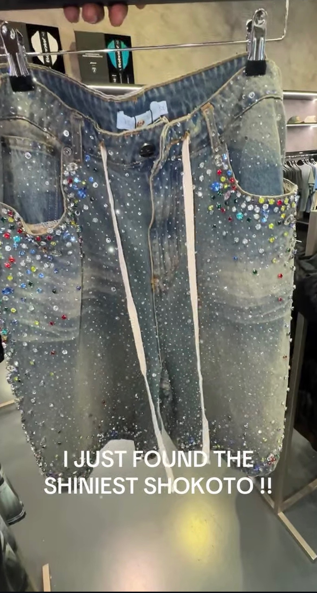

Welcome to the Debate
Every few months the timeline erupts over one question: should men wear shiny shokoto? Some say it is fearless. Others say it is too much. This site collects the evidence, lets you vote, and refuses to take a side.
Here is the official position of this website: wear what makes you feel unbothered. Now, look at the evidence.
